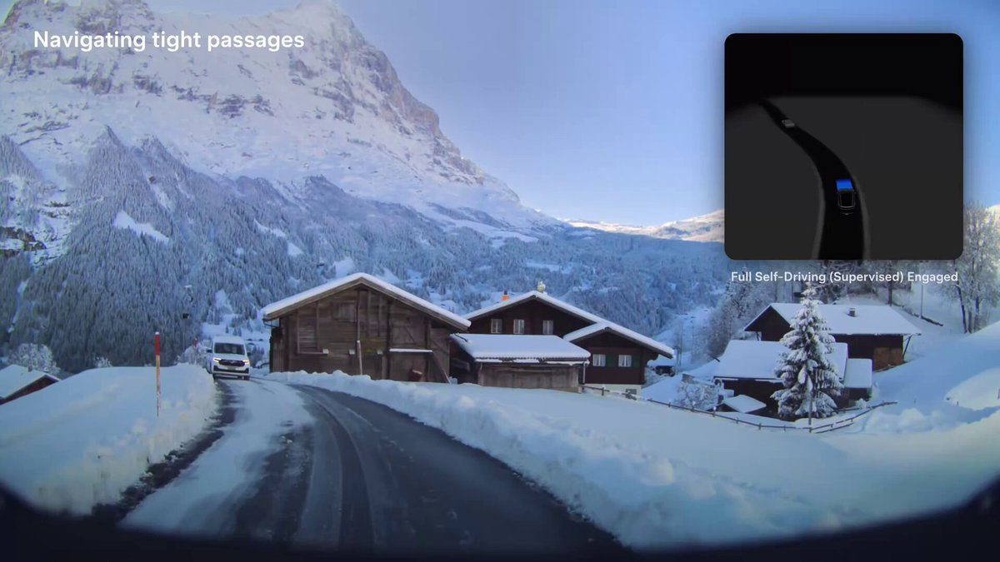
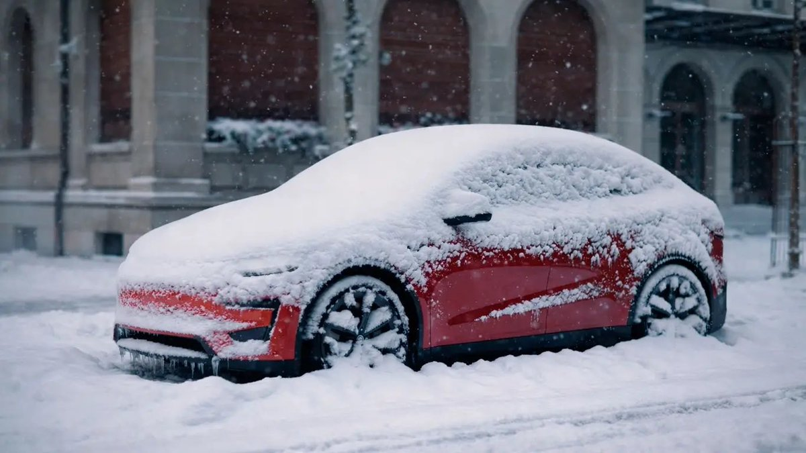

Tesla · Reviews
Car reviews
Independent notes on the cars that matter on the timeline: who each one is for, what Europe changes, and where FSD Supervised fits. Not affiliated with Tesla.
Current lineup
Five cars. One page each.
Model 3
The daily driver. Tight, efficient, and the one most people should start with.

Model Y
Europe’s volume car. More space, same software stack, still the default family pick.
Model S
Range and pace for people who want the sedan that still sets the bar.
Model X
Falcon wings, seven seats, and the S underpinnings in a taller body.

Cybertruck
Still a US story. Worth reading before you dream about Irish lanes.
How these reviews work
Written from an owner and shareholder seat in Ireland — software, charging, FSD Supervised, and the bits a brochure skips. Specs move; the fit questions stay. Cross-check Tesla’s configurator and your local approval status for FSD before you buy.